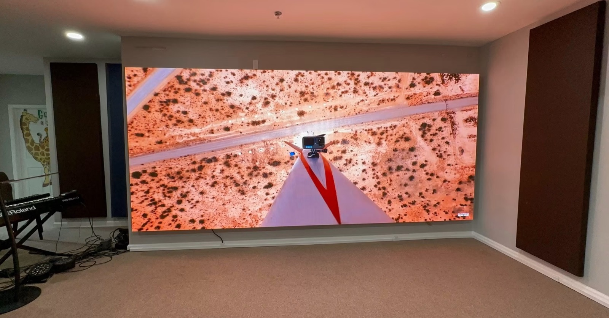

The United Arab Emirates is one of the Middle East's leading LED display import and re-export hubs. Jebel Ali Port offers direct sailings from Shenzhen, and the UAE free zones allow duty-free import, storage and re-export with relatively light paperwork. A large share of displays entering the UAE is later re-exported to Saudi Arabia, Iraq, Kuwait, Oman and markets across East Africa.
This guide covers the complete process for UAE-based importers and distributors, from choosing between a free zone and a mainland import route through to the documentation needed for onward re-export.
The first structural decision is whether the goods will be sold inside the UAE or moved onward to another market. That single question determines the customs regime, the duty exposure and the documentation set, and it is far cheaper to answer it before the container sails than to correct it afterwards.
Free zones such as JAFZA and Dubai Silicon Oasis are built for re-export. Goods enter without import duty, VAT is not charged on onward re-exports, and storage can be maintained while buyers arrange sales into neighbouring markets. The trade-off is that product leaving the free zone into the UAE mainland triggers the normal duty and tax treatment at that point.
Importing directly into the mainland suits distributors selling into the local market, whether to hotels, malls, government projects or events. Mainland import carries import duty and VAT, and requires ESMA certification for the product, but it puts the stock in a position to be invoiced to local customers without a further customs event.
Many established UAE distributors run both routes in parallel: a free-zone entity for regional re-export and a mainland licence for domestic sales. This structure lets them serve both markets from one location, using the free zone as a bonded buffer and the mainland entity for local fulfilment.
| Route | Best For | Duty and Tax | Key Documentation |
|---|---|---|---|
| Free zone import (JAFZA, DSO) | Re-export to Gulf and African markets | No import duty, no VAT on re-export | Free zone certificate, supplier invoice |
| Mainland UAE import | Sales within the UAE market | Import duty plus VAT | ESMA certification, customs declaration |
| Free zone then mainland | Mixed re-export and local sales | Duty and VAT on the mainland leg only | Free zone records plus mainland declaration |
| Transit cargo | Goods passing through to a third country | No duty if not entering the market | Transit documentation, bill of lading |
ESMA, the Emirates Authority for Standardisation and Metrology, governs conformity for products entering the UAE mainland market. LED displays fall within its scope, and mainland distribution requires the product to demonstrate conformity with the applicable standards. Products held in a free zone purely for re-export may not need full ESMA certification, but buyers re-exporting into other Gulf markets are advised to carry GCC marking to smooth the onward process.
The assessment for LED displays focuses on electrical safety and electromagnetic compatibility, supported by test evidence. As in other markets, strong IEC or CE test reports provide the technical foundation and reduce the amount of new testing required. Suppliers who hold recognised international reports are easier to certify than those who do not.
Documentation should name the specific product series rather than a generic family. A certificate referencing a different cabinet or module can be rejected at the point of sale, so importers should insist that the conformity evidence matches the exact models they hold in stock. Where a supplier offers several series, each may need its own evidence.
Asia Vision supplies products supported by the safety and electromagnetic compliance documentation UAE importers need, together with the supplier invoice and certificate of origin required for both mainland import and free-zone re-export. Having that package complete at shipment avoids the common situation where a container is stranded while a certificate is chased.
Certification planning should begin before the product is ordered, not after it lands. Because conformity evidence is tied to a specific product series, a buyer who selects a model without checking its certification status can find that the display cannot legally be sold into the mainland market without additional testing. Asking the supplier for the conformity documentation at the quotation stage removes that risk entirely and costs nothing.
It is also useful to keep the free-zone and mainland requirements clearly separated in the importer's own records. Goods moving between the two regimes cross a customs boundary, and each movement should be documented as such. Distributors who maintain clean records for both sides avoid the confusion that arises when stock held under a free-zone licence is later sold into the domestic market without the corresponding declaration.
For buyers serving both the UAE and its neighbours, the efficient approach is to standardise on product that meets the strictest requirement in the region. A display carrying the conformity evidence demanded by the mainland market can generally be re-exported onward without difficulty, whereas a product approved only for bonded storage may need additional work before it can enter any consumer market.
Direct sailings from Shenzhen to Jebel Ali are the backbone of the UAE import trade, with transit among the shortest of any major Middle East destination. Jebel Ali sits inside the JAFZA free zone, which means a container can be discharged and moved into bonded storage without first clearing mainland customs, an arrangement that suits re-exporters particularly well.
Khalifa Port serves the Khalifa Industrial Zone and the Abu Dhabi side of the country, and is a sensible alternative for importers whose receivers or projects sit in the capital or its industrial belt. Transit is slightly longer than to Jebel Ali but the inland leg is shorter for Abu Dhabi-based operations.
Container planning matters as much as port choice. LED cabinets cube out before they weigh out, so efficient packing of modules, cabinets and flight cases directly affects how much product fits in a 40-foot high-cube. Suppliers experienced in export packing will consolidate intelligently rather than leave air in the container.
Air freight into Dubai or Abu Dhabi is used for samples, urgent event replacements and high-value small consignments. The premium is real for bulky hardware, but for a single critical cabinet the speed can justify it, particularly when a live event or an opening date is at stake. Asia Vision, for example, ships production in 15 to 20 working days while supporting air shipment for urgent spares.
| Route | Transit Time | Gateway | Best For |
|---|---|---|---|
| Shenzhen to Jebel Ali | 16-20 days | JAFZA, inside the port area | Re-export and Dubai distribution |
| Shenzhen to Khalifa Port | 18-22 days | Khalifa Industrial Zone | Abu Dhabi projects and industry |
| Air to Dubai (DXB / DWC) | 4-6 days | Dubai airports | Samples and urgent replacements |
| Sea to Sharjah / Ajman | 17-22 days | Northern emirates feeder | Northern emirates receivers |
Re-export is the reason many importers choose a UAE free zone in the first place. Goods held in a bonded free zone can be re-exported with relatively light paperwork: a certificate of origin from the manufacturer, the supplier invoice, and the bill of lading are usually sufficient to move the consignment onward to a third country.
The onward destination shapes the documentation that must travel with the goods. A consignment bound for Saudi Arabia will need SASO shipment certification for that market. Goods heading to Iraq, Kuwait, Oman or East Africa each carry their own import requirements, so the re-export file should be assembled with the final destination in mind rather than the UAE entry alone.
Origin documentation is a frequent sticking point. Gulf customs authorities expect a certificate of origin that clearly shows the goods were manufactured in China, together with an invoice that values them consistently with the entry records. Discrepancies between the two invite scrutiny and delay, so the numbers should be reconciled before the goods move.
Warehouse handling inside the free zone also deserves thought. Screens stored for weeks or months between import and re-export should be kept dry, stacked within the cabinet manufacturer's limits, and inspected before dispatch so that transit damage from the first leg is caught before it is attributed to the second. A short condition check at the free zone prevents disputes later.
Asia Vision supports re-export programmes by providing complete documentation for outbound shipments, including the certificates of origin, invoices and product conformity evidence that importing countries require. For importers running a regional distribution model out of the UAE, that support turns the free zone into a genuine hub rather than a storage cost.
Product documentation is supplied per series; the LED display series overview lists cabinet configurations, weights and packing data for import planning.
Related reading: Retail digital signage sourcing for Saudi
Get ESMA/GCC certified pricing with Jebel Ali delivery for Dubai-based importers.
Request UAE Import QuoteChat on WhatsApp